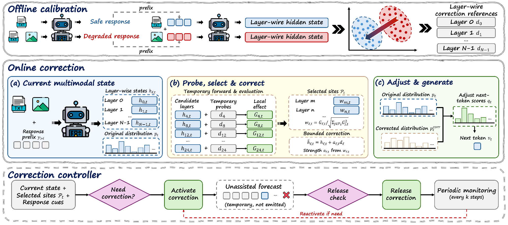
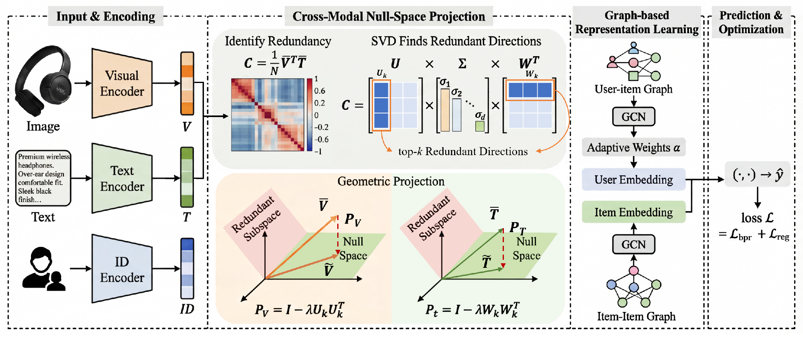
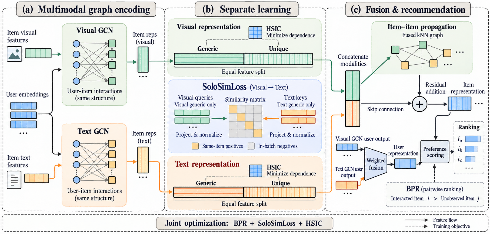
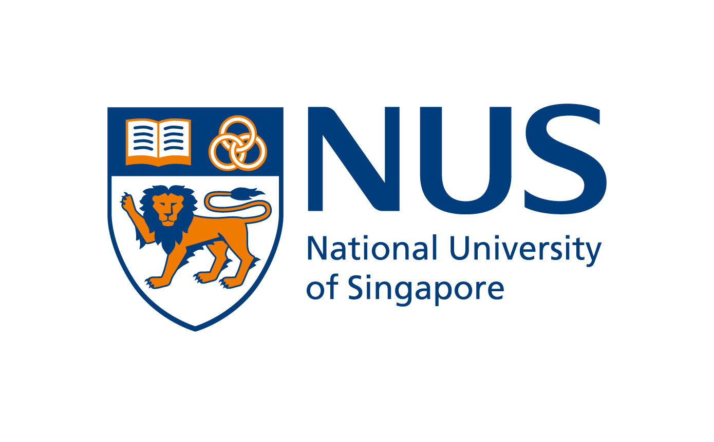
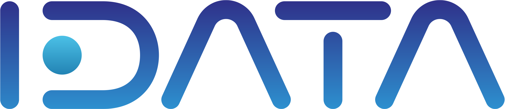

Safety and alignment
How safety behavior changes across layers and generation steps; targeted interventions and safety–utility trade-offs.
Safety · Representation · Personalization
My current research focuses on LLM/MLLM safety and alignment, particularly how visual inputs influence safety-relevant representations and how interventions can support safe generation. This work builds on a sustained background in multimodal learning and recommendation.
I am an undergraduate at Hefei University of Technology, where I work with Prof. Le Wu and Dr. Yonghui Yang in the Lab of Multimedia Computing. I am also a remote research intern at NUS NExT++, co-supervised by Dr. Yonghui Yang and Prof. Tat-Seng Chua.
Fall 2027 I am seeking PhD and research-based master’s opportunities, with a particular interest in model safety mechanisms and trustworthy multimodal learning. Get in touch
How safety behavior changes across layers and generation steps; targeted interventions and safety–utility trade-offs.
How modalities align, share information, and preserve complementary signals—and how these choices affect behavior.
Learning representations for user preferences, with a growing interest in LLM-based personalization.
First-author manuscripts on multimodal safety and representation learning.

ICLR 2027 · Under review
Adapting where and when to intervene as a response develops. Layer-wise correction and trajectory feedback support safety recovery in multimodal models with frozen backbone weights.

AAAI 2027 · Under review · Passed first-round review
When shared information dominates, complementary details can be overlooked. CLEAR uses cross-modal covariance and controlled attenuation to rebalance visual and textual representations.

ACM Transactions on Information Systems (TOIS) · Under review
Learning shared and modality-specific information explicitly. SEA combines representation partitioning, statistical dependence control, and cross-modal alignment for recommendation.
ICLR · Under review
IEEE Transactions on Knowledge and Data Engineering (TKDE) · Under review
ACM SIGKDD Conference (KDD) · Under review

May 2025 – Present
Remote Research Intern · NExT++
Co-supervised by Dr. Yonghui Yang and Prof. Tat-Seng Chua
Studying vision-induced safety degradation in multimodal language models. My current work examines layer-wise interventions and feedback during generation to recover safe behavior while retaining visual context.
Jun. 2024 – Present
Research Member · Lab of Multimedia Computing
Working with Prof. Le Wu and Dr. Yonghui Yang
Investigating how multimodal information is represented and used in recommendation. My first-author projects address cross-modal redundancy and explicit shared–unique representation learning.

2024 – 2025
Intern · Public Opinion Analysis Platform
Developed the platform’s front end and back end, and processed sentiment and public-opinion data for LLM fine-tuning and post-training.
Sep. 2023 – Jun. 2027
Undergraduate in Software Engineering · Expected graduation June 2027
Music has been part of my life since I began learning the saxophone at six. I later passed the Grade 8 examination, and I also enjoy playing the piano and singing. Cantopop is a favorite, especially Eason Chan.
I enjoy reading about psychology and cognitive science, particularly the questions they raise about learning, understanding, and intelligence.